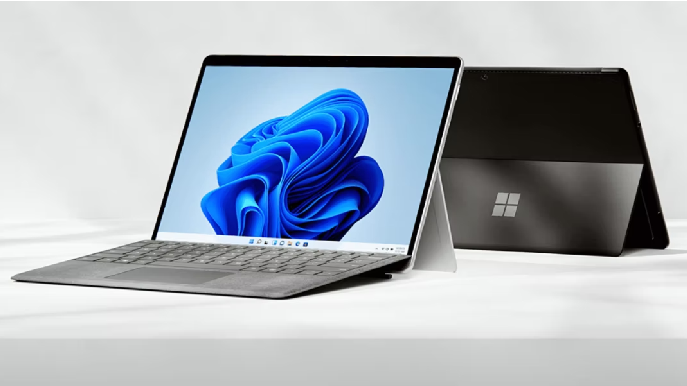
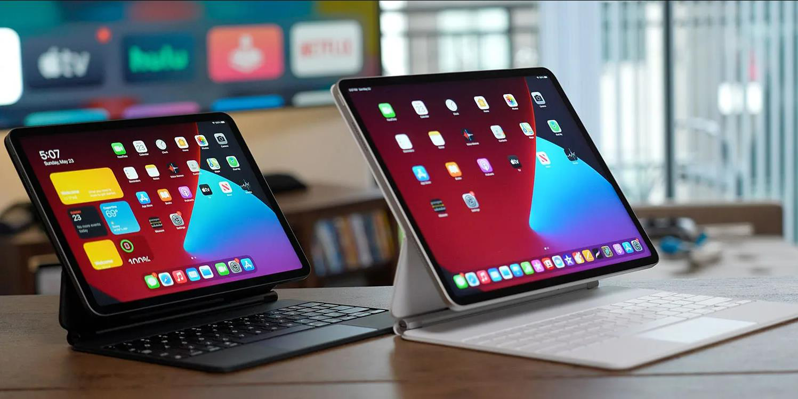

タブレットの選び方
タブレットの選び方のポイント1 OS
- iPad OS 2019年より提供が開始されたiPadの為に設計されたOSです。これまでiPadはiPhoneと同じiOSでしたが、iPadに最適化した新しいOSとして生まれ変わりました。iOSの機能に加え、マルチタスク機能がより進化し、マウスやトラックパッドに対応するなど、ノートパソコンのように扱える機能が追加されました。プライベートでも仕事でも柔軟に対応できる点が魅力です。また、iPhoneを使っているなら「Apple ID」で写真や連絡先、ファイルなどの同期ができ便利です。
- Androidを搭載したタブレットは、iPadシリーズがアップルからしか発売していないのと比べると、各社からさまざまなモデルが発売されており、幅広い選択肢があるのが特徴です。Androidは、Googleがモバイル向けにリリースしているOSなので、Google アカウントと簡単に同期できるのも魅力です。
- Windowsは、パソコンのOSと同じものです。そのため、Windowsパソコンの操作に慣れている方なら、初めてでもとっつきやすいでしょう。また、Officeなどのパソコン用ソフトが使えますので、仕事でもタブレットを使うのであればおすすめです。
- なお、OS選びで迷ったときには、自分が使っているスマートフォンと同じOSのタブレットを選ぶのがおすすめです。同じOSであれば、タブレットの購入が初めてでも使い方に戸惑う場面が減るでしょう。
タブレットには、大きく3種類のOSがあります。
タブレットの選び方のポイント2 画面サイズ
- スマートフォンと異なり、タブレットは画面サイズがいろいろと分かれています。どのような場面でどのように使いたいかによって最適な画面サイズが変わりますので、ニーズに合わせて選びましょう。
- 一番小さいのは7～8インチのモデルです。このサイズのタブレットはスマートフォンよりも少し大きい程度ですので、片手でも持てる軽さと、コンパクトさが魅力です。そのため、持ち歩いていてもストレスをほとんど感じません。
- それより大きいタブレットは10インチ前後のモデルです。7～8インチモデルよりはサイズが大きい分、持ち運びには少し不便になるものの、それによって漫画や雑誌などの電子書籍やWebサイトが見やすくなるというメリットがあります。
- さらに大きなモデルは、12インチ以上のタブレットです。画面サイズはノートパソコンとほぼ同じようになるため、別売のキーボードを取り付けてノートパソコンと同じように使うのもおすすめです。このサイズのタブレットの中には、最初からキーボードが付属していて、ノートパソコンとタブレットの両方の使い方ができる「2in1タイプ」も多く存在します。
- なお、画面サイズだけでなく、画面の解像度も大切です。7～8インチモデルのタブレットで、用途がインターネットとメール、SNSなどの閲覧程度でしたら1280×800ドットぐらいの解像度で問題ありません。ただ、10インチ前後かそれ以上のサイズのタブレットで、鮮明な動画や写真を見たいのであれば、フルHD（1920×1080ピクセル）以上の解像度がおすすめです。
タブレットの選び方のポイント3 容量
- タブレットもパソコンと同様、メモリの容量と記憶容量によって快適さが変わってきます。メモリについては、Windowsタブレットで4GB以上（パソコンと同様）、Androidでは2GB以上あれば快適に動作します。iPadについてはメモリ容量が公表されていませんが、快適に動作するメモリ容量を搭載して発売されています。
- 記憶容量については、32GB以上ある物を選びましょう。サクサクと快適に使いたいのであれば、64GB以上の容量がおすすめです。なお、AndroidやWindowsのタブレットはmicroSDカードで容量を増やすことができますが、iPadシリーズにはmicroSDカードのスロットが搭載されていないため、標準の状態では、記憶容量を簡単に増やすことができません。予算が許す限り、購入時に記憶容量が大きなモデルを選ぶことが大切です。
